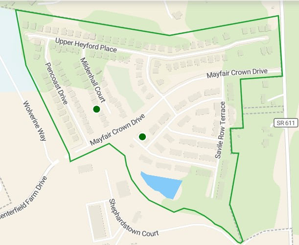
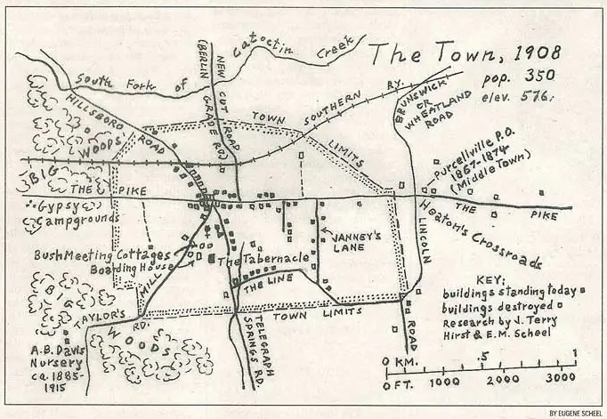

Mayfair Community History
Mayfair captures the timeless charm of early Purcellville, rooted in generations of local farming history and surrounded by old oak trees. We are positioned near the historic W&OD Railroad line that sparked the town's original economic growth, the area bridges past prosperity with modern living.
The name "Mayfair", like London's upscale Mayfair neighborhood, it was selected locally to represent springtime growth and the community's future promise. Its unique street names—like Regency Drive and Savile Row Terrace—thoughtfully combine British tradition with the area's scenic countryside roots.
Driven by Purcellville's early 2000s growth, our community first broke ground in 2012 near Hirst Road and the W&OD Trail, intentionally offering a park, tree-lined sidewalks, and diverse home styles that maintain the village's small-town aesthetic.
Founded in 2015, Mayfair is a thriving, family-oriented neighborhood popular with professionals and retirees. With a welcoming spirit and deep local roots, our community will remain a beloved part of the Purcellville neighborhood for generations to come.

